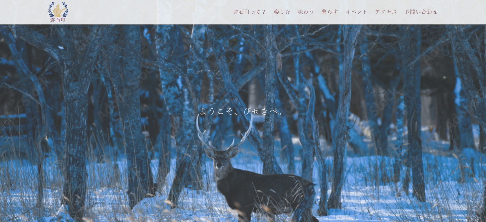

弥石町(びせきちょう)の公式HP
-
＜クライアント＞
北海道にある弥石町(びせきちょう)という自然豊かな田舎町の町役場の観光部署。 -
＜依頼内容＞
その昔、大規模なアイヌのコタン(村)があった地域で、遺された多くの遺物や遺跡を観光の目玉にしようと考えている。
また、農業や酪農も発達しており、それらの販売や、それらを使った特産品などの販売も行っている。
上記の内容を活かした、町の魅力を広く伝えてもらえるWebサイトの作成。 -
＜目的＞
①観光地として訪れてもらう。②実際に住んで働いてもらう。 -
＜制作期間＞
1ヶ月 -
＜ターゲット＞
アイヌやアウトドアに関心があり、将来的に移住を考えている20~30代の男女。 -
＜気を付けたポイント＞
ファーストビューは、北海道の大自然を彷彿とさせる画像を用いて、インパクトを与えられるものにしました。
アイヌに興味のある若年層向けということで、配色やアニメーションは控えめにし、フォントも小さめに設定しました。
「イベント」という項目の見出し画像は、観光サイトのイベント情報を参考に、シンプルかつわかりやすいものになるよう意識して作りました。